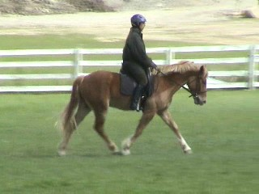
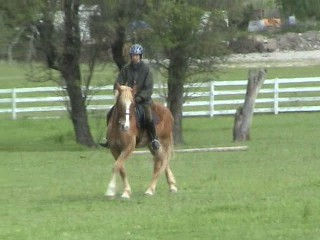
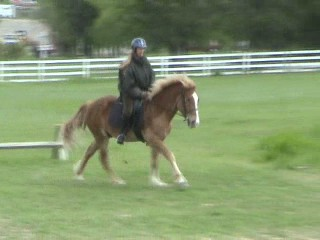

04/06/07
Dressage Schooling Video
I was testing out a new bit on Mo. I got
one of the Happy Mouth bits. He wasn't as
responsive in it, but he didn't open his mouth as
much as he does with a broken bit.
Walk/Trot

Introducing lateral work

Some canter
